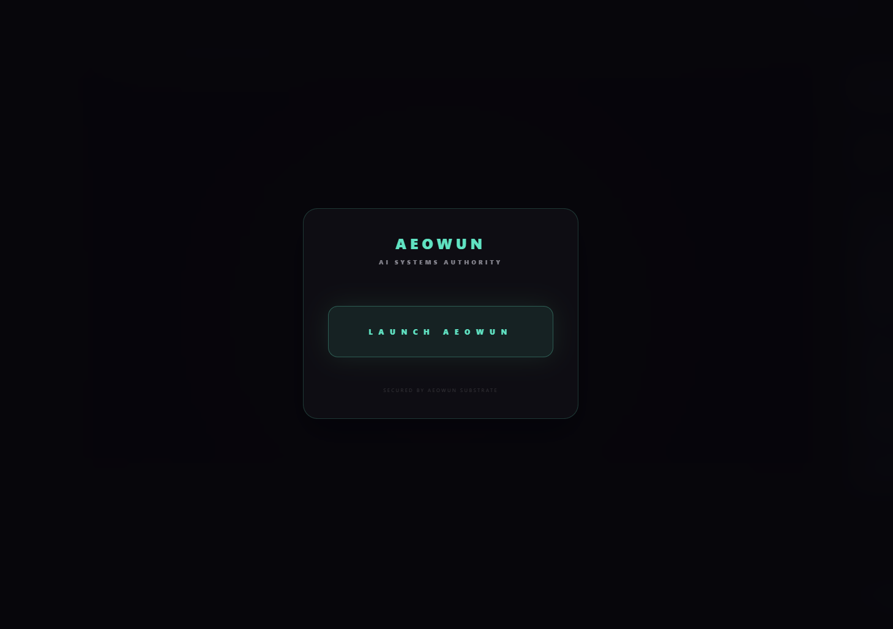

AEOWUN ENGINE.
THE CORE AUTHORITY.
I built Aeowun to handle the heavy lifting. It's a custom engine that keeps track of every decision, making sure nothing breaks when things get complex. It's not just code; it's the authority that makes sure everything actually works together.
01 // HOW IT THINKS
No Silent Failures
Aeowun doesn't just run scripts; it follows a trail. Every single action is tied to a specific reason and a user decision. If something changes, I can trace it all the way back to the exact moment it happened.

02 // SEEING EVERYTHING
Total Observability
I need to know what's happening under the hood. The system tracks every event—from activating a workspace to calling a tool—so I'm never left guessing what the AI is up to.

03 // SAFETY FIRST
ShadowFS Workspace
I don't like my files getting corrupted by rogue code. ShadowFS creates a task-isolated playground where changes are staged in memory first. Nothing touches my hard drive unless the system proves it's safe.
AXEIS RUNTIME.
THE INTEL PARTNER.
AXEIS is where I do the deep dives. Instead of just asking an AI for answers, Axeis forces it to prove them. It's got this "Kill Phase" where it tries to rip its own theories apart. If it survives that, you know it's solid.
01 // WHO'S IN CHARGE
The Decider (AAM)
AXEIS follows one rule: "The AI proposes, but Axeis decides." The system manages every single state change, so no agent can just mark its own homework as finished.
02 // STRESS TESTING
Mandatory Kill Phase
Most AI assistants just tell you what you want to hear. Axeis does the opposite—it actively tries to destroy its own ideas. It looks for contradictions and better explanations to make sure the final result is bulletproof.
AEGIS MONITOR.
THE SOVEREIGN WATCHMAN.
Tired of generic security software, I built Aegis. It watches every single device on my network, sniffs out weird behavior, and has a "deception" mode to trap anyone trying to poke around. It's my personal digital bodyguard.
01 // DECEPTION
The Deception Substrate
Aegis doesn't just block—it baits. I built a honeypot system that projects fake vulnerable services onto the network. If anything touches them, the system immediately locks them in a digital void.

02 // IDENTITY
Identity Bridge
Most scanners just give you a list of MAC addresses. Aegis sniffs mDNS packets to resolve identities—knowing the difference between a "Kitchen Smart Speaker" and an "Unknown Laptop."
LANGO.
THE LANGUAGE BRIDGE.
I wanted a better way to learn new languages, so I built Lango. It's a simulator that doesn't just check if your code runs—it checks how you're thinking. It bridges the gap between the languages you know and the ones you're trying to master.

01 // THE JOURNEY
Interactive Mission Map
I organized the curriculum into functional missions. Instead of boring textbooks, you follow a map that unlocks new concepts as you prove you understand the basics.

02 // REAL-TIME FEEDBACK
Active Workspace
This is where the actual work happens. The simulator gives immediate feedback on not just the output, but the structure of the code itself, ensuring you're learning clean habits from day one.
INTERACTIVE WORLDS.
SYSTEMIC STORIES.
When I'm not building engines, I'm building worlds. This is an archive of the simulations, experiments, and digital environments I've created over the years.
Tiny City
A massive city management sim where I focused on UI density and systemic growth. It's about managing chaos.
The Apothecary
An atmospheric crafting sim focused on alchemical logic and systemic roleplay.
Blackline
Interactive world-building and cinematic exploration. A project about atmosphere and precision.